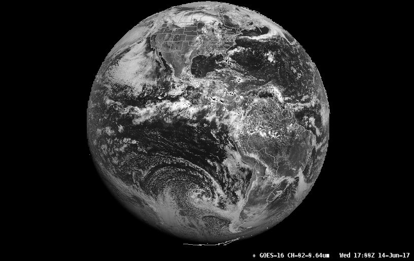
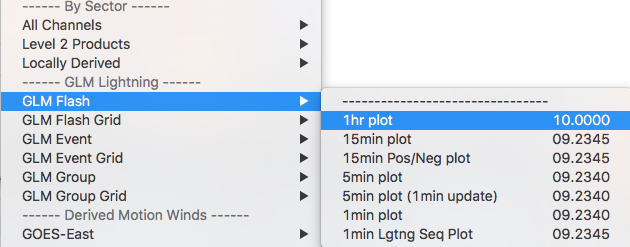

GOES-16 (GOES-R)
AWIPS ingest and display of GOES-16 (GOES-R) products is handled by contributions from the awips2-goesr plugin repository. As of Unidata AWIPS 17.1.1, the GOES-R decoder supports the ingest and display of NOAAport provisional products (currently on the NOTHER feed), as well as Level 2b netCDF files. A GOES-R Geostationary Lightning Mapper (GLM) decoder is also provided to handle sensor lightning observations.
GOES-R products are accessible in the menu Satellite > GOES-16 Provisional Products

NOAAport Provisional Products
LDM Pattern Action
NOTHER ^(TI[RS]...) (KNES) (......) (...)
FILE -close -edex
/awips2/data_store/satellite/goes16/\1_\2_\3_\4_(seq).gini
Puerto Rico sector (PRREGI)

CONUS 1km

Full Disk 6km

Mesoscale Sectors (TMESO-1, TMESO-2)
Two floating mesoscale sectors (will vary from image shown)

Icing Composite
Channels 5,3,2 (1.61u, 0.87u, 0.64u)

Daytime Composite 1
Channels 2,5,14 (0.64u, 1.61u, 11.20u)

Daytime Composite 2
Channels 2,3,2 (0.64u, 0.87u, 0.64u)

GOES-16 Composite Imagery NOT SUPPORTED on macOS
OpenGL Shading Language limitations prevent multi-channel imagery from displaying correctly on Mac:
- Icing (1.61, 0.87, 0.64)
- Daytime Composite (0.64, 1.61, 11.20)
- Daytime Composite (0.64, 0.87, 0.64)
To display multi-channel composites requires CAVE for Linux or Windows.
HDF5 Data Store
Decoded GOES-R satellite images are stored in /awips2/edex/data/hdf5/satellite/ under sector subdirectories:
drwxr-xr-x 18 awips fxalpha PRREGI
drwxr-xr-x 18 awips fxalpha TCONUS
drwxr-xr-x 18 awips fxalpha TFD
drwxr-xr-x 18 awips fxalpha TMESO-1
drwxr-xr-x 18 awips fxalpha TMESO-2
Level 2+ Products
Level 2+ products are described as derived environmental variables which will be created and disseminated when GOES-16 is used operationally (compared to Level 0, described as unprocessed instrument data at full resolution, and Level 1b products, described as radiometric and geometric correction applied to produce parameters in physical units).
Unidata does not currently have access to these products, but EDEX 17.1.1 can support their ingest if made available.
Read more about GOES-R data levels...
Level 2+ Decoder Regular Expression
From /awips2/edex/data/utility/common_static/base/distribution/goesr.xml
^OR_ABI-L2-\w{3,5}(C|F|M1|M2)-M[34]_G\d\d_s\d{14}_e\d{14}_c\d{14}.nc$
Geostationary Lightning Mapper (GLM)
NASA's SPoRT MSFC Earth Science Office has contributed plugins to decode GLM level2 products, displayed as point data in CAVE.
While Unidata is not currently distributing GLM products, you can download a sample netCDF file and copy it to /awips2/data_store/ingest/ in order to test the decoding and display of GOES-R lightning data.
Ingest Sample Data
Run the single command from your EDEX server to ingest a single-time sample data set:
wget http://www.unidata.ucar.edu/software/awips2/OR_GLM-L2-LCFA_G16_s20170402339144.nc -P /awips2/data_store/ingest/
Display GLM Lightning Data
Load GLM data from the menu Satellite > GOES-16 Provisional > GLM-Lightning. Data are displayable as Flash, Event, and Group and 1min, 5min, 15min, and 1hr intervals.


Derived Motion Winds
At the bottom of the menu Satellite > GOES-16 Provisional Products are sub-menus for GOES-16 Derived Motion Wind (DMW) products. Select the sub-menu GOES-Test and then region (CONUS, Full Disk, Mesoscale), and then select the wind product by level:
- By Pressure
- By Mandatory Levels
- By Channel